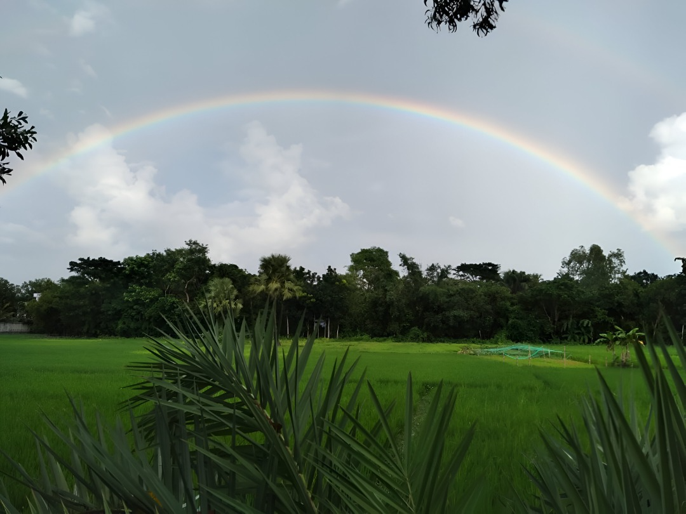
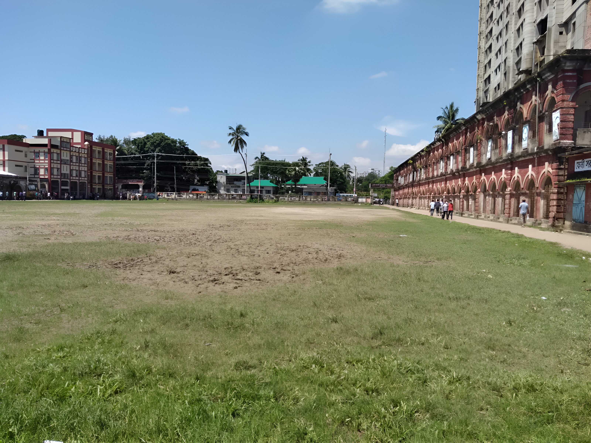
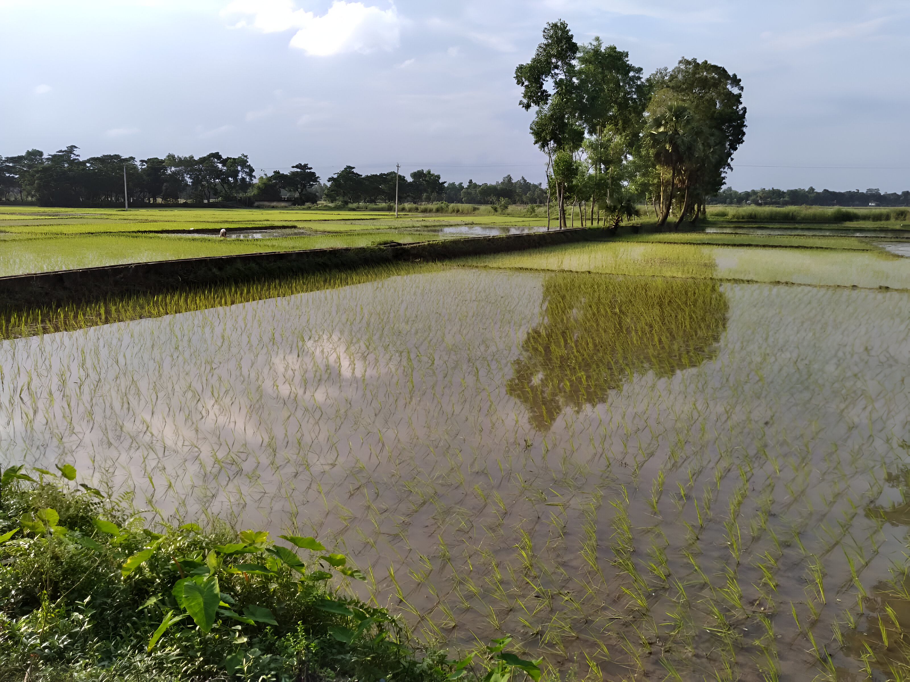
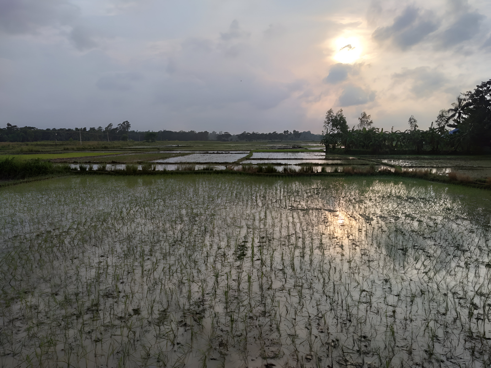
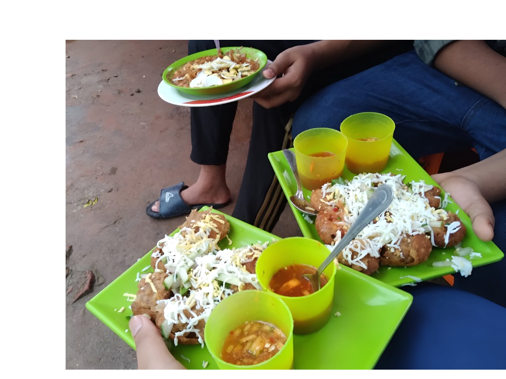
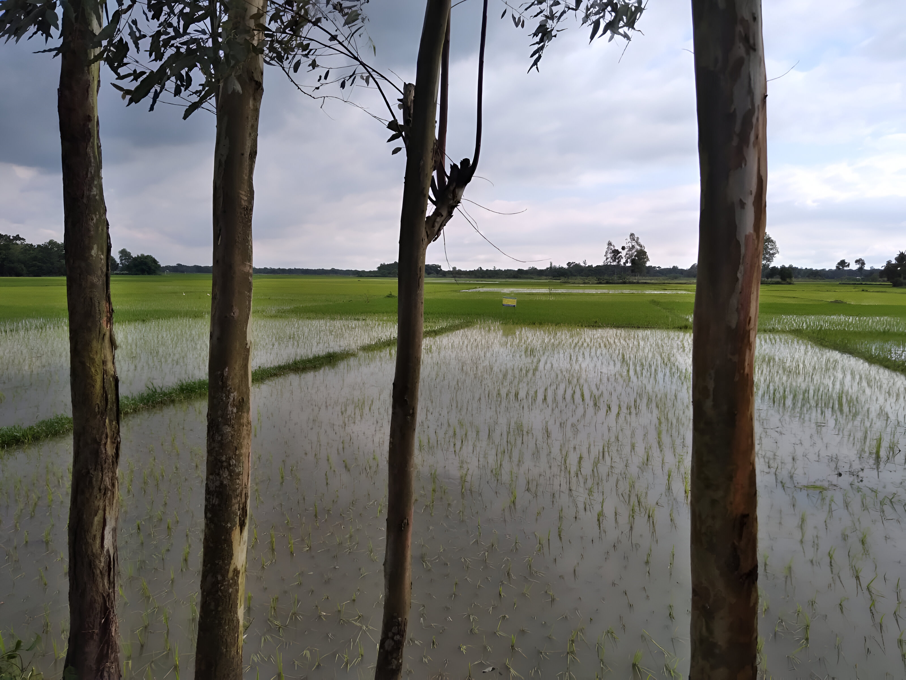

¡Hola! En este espacio, no solo compartiré mis experiencias y aprendizajes en el desarrollo de proyectos web,
sino también algunas de mis vivencias personales, como los viajes que he tenido la suerte de disfrutar.
¡Espero que encuentres algo que te inspire o te sea útil!
Mi Primera Entrada en el Blog (Proyectos)
Publicado el por Main Alam
¡Bienvenido a mi nuevo blog! Este es el primer artículo donde compartiré mis experiencias
aprendiendo desarrollo web. Espero que encuentres contenido útil e interesante.
Aquí hablaré sobre HTML, CSS, JavaScript, y los frameworks que vaya explorando.
También podría incluir algunos tutoriales y consejos que me hayan servido.
Mi Aventura de 2021: Viaje de España a Bangladesh ✈️🌏
Publicado el por Main Alam
En 2021, tuve la increíble oportunidad de realizar un viaje muy especial: desde mi hogar en España hasta Bangladesh,
la tierra de mis raíces. Fue una experiencia llena de emociones, reencuentros y descubrimientos culturales.
Quiero compartir algunos de los momentos más memorables y las impresiones que este viaje dejó en mí.
Desde los preparativos llenos de ilusión hasta el aterrizaje en un entorno tan familiar y a la vez tan diferente
despus de tiempo, cada etapa fue una aventura. Pude reconectar con familiares, explorar paisajes vibrantes
y sumergirme en la riqueza de la cultura bengalí.
Galería de Recuerdos del Viaje 📸
Aquí te dejo algunas fotografías para echar un vistazo a esta experiencia. ¡Espero que te gusten!






Este viaje no solo fue un desplazamiento físico, sino también un viaje interior que me permitió crecer
y apreciar aún más la diversidad del mundo. ¡Definitivamente una experiencia que guardaré siempre en mi corazón!
Este mes de julio, del 8 al 10, hice una escapada inolvidable a Alicante. No era solo un viaje para descubrir una nueva ciudad, sino que también guardaba un momento muy especial para mí: ¡iba a entrar en el agua del mar por primera vez en mi vida! La emoción era inmensa.
Los dtuvieron llenos de sol, arena y descubrimientos. Visité la famosa Playa del Postiguet, con su ambiente vibrante y sus vistas espectaculares. También subí al imponente Castillo de Santa Bárbara, desde donde pude contemplar toda la ciudad y el Mediterráneo. Pero, sin duda, el recuerdo que más atesoraré será la sensación del agua salada y las olas.
Momentos Inolvidables: Fotos y Video 📸
He preparado una pequeña galería con algunas de las mejores fotos y un video de esta aventura. ¡Espero que te transporte a la costa alicantina!
Alicante me ha regalado una experiencia increíble y un recuerdo que guardaré para siempre. Fue más que un simple viaje; fue una colección de primeras veces y de momentos de pura felicidad. ¡Totalmente recomendado!
Este es un segundo artículo de ejemplo. Aquí podrías hablar sobre un proyecto específico,
una tecnología que te guste, o cualquier otra cosa relacionada con tu campo.